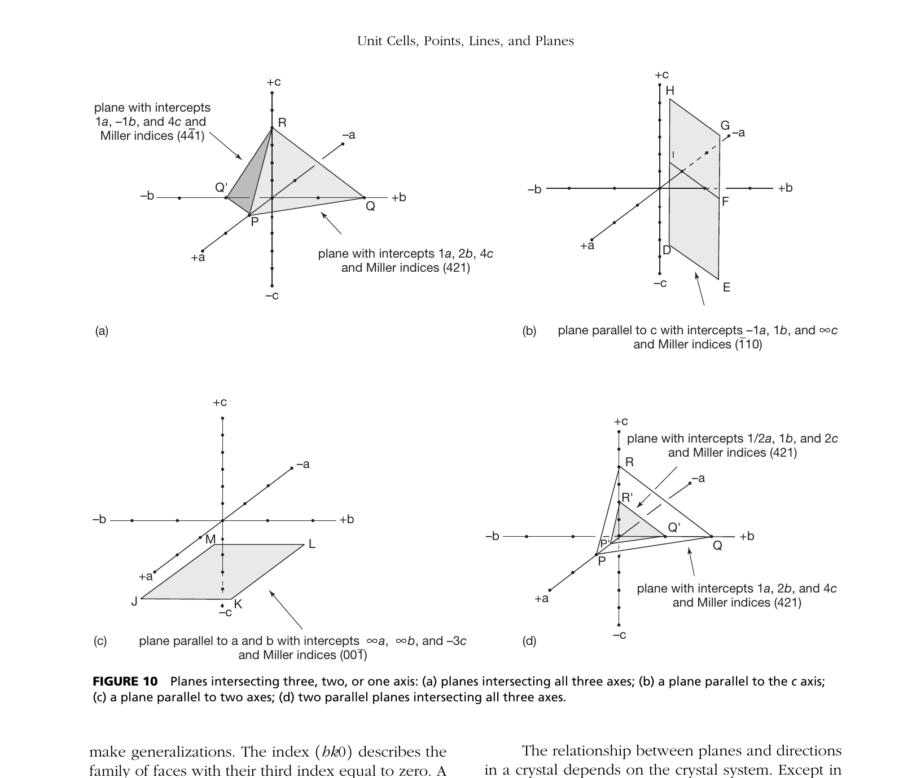

Crystallographic Rules of Miller Indices: By international crystallographic convention (established by William Hallowes Miller in 1839):
Miller indices must be whole integers. Fractional notations like $(1/2, 1/2, 1)$ represent fractional intercepts or raw reciprocals before clearing fractions. By rule, fractions must be cleared by multiplying by the least common denominator (which would convert $(1/2, 1/2, 1)$ into the valid Miller index $(1 1 2)$).
Expressions incorporating the crystallographic axis labels (such as $1a : 1b : 1c$) are Weiss parameters (axial parameters), not Miller indices. Miller indices are dimensionless integers ($h, k, l$) and never contain the letters $a, b,$ or $c$.
In crystallography, the type of brackets used defines the physical entity being described. Bare numbers without parentheses fail standard crystallographic syntax and do not specify a crystal face.
| Bracket Type | Example | Geometrical Entity Represented | Physical Significance |
|---|---|---|---|
| Parentheses: $(h k l)$ | (1 1 1) or (1 0 0) | Individual Crystal Face or Lattice Plane | A single planar surface of a crystal or specific family of parallel atomic lattice planes. |
| Curly Braces: $\{h k l\}$ | $\{1 0 0\}$ or $\{1 1 1\}$ | Crystal Form | A complete group of symmetry-equivalent crystal faces (e.g., $\{100\}$ represents all 6 cube faces). |
| Square Brackets: $[u v w]$ | $[0 0 1]$ or $[1 1 0]$ | Zone Axis / Direction Vector | A linear vector or zone axis pointing along a lattice line (e.g., $[001]$ points along the $c$-axis). |
| Angle Brackets: $\langle u v w \rangle$ | $\langle 1 0 0 \rangle$ | Family of Symmetry-Equivalent Directions | All crystallographically equivalent direction vectors in the lattice. |